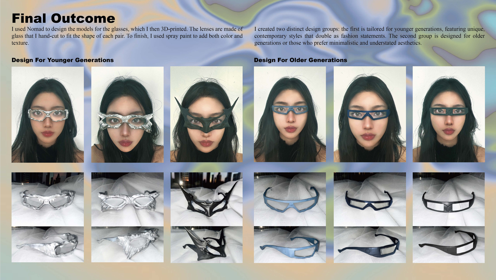

Resonance is a wearable interaction design project that translates music from an auditory experience into visual and haptic feedback, enabling hearing-impaired users to perceive rhythm and emotion through alternative sensory channels.
The project was inspired by my grandmother’s hearing loss and explores accessible ways of experiencing music beyond sound. I developed a real-time audio-responsive visual system using TouchDesigner, and projected these dynamic visuals onto a pair of self-designed and 3D-printed wearable glasses to create an immersive visual music interface. In parallel, I designed a companion mobile app that analyzes musical beats and transmits synchronized haptic feedback via smartphone and Apple Watch vibration. The project also includes age-adaptive visual styles and wearable form variations, improving emotional accessibility across different user groups.
This work demonstrates my skills in generative visual design, wearable device prototyping, cross-device interaction design, and inclusive experience design.
